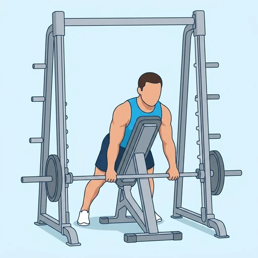

Chest-Supported Smith Machine Row
A row performed against an inclined pad inside the Smith machine, where the chest support removes the lower back from the movement and the guided bar keeps the pull in one line.
Back · Smith Machine · Beginner


Muscles worked by the Chest-Supported Smith Machine Row
Primary
Secondary
Also called: lats, lat, latissimus dorsi, latissimus, back wings, rhomboid.
Equipment
Also called: smith bar, guided barbell, fixed barbell, smith press.
How to do the Chest-Supported Smith Machine Row
- Set an incline bench inside the Smith machine facing the bar, and set the bar low enough that your arms hang straight when you lean on the pad.
- Stand astride the bench with your feet planted and your chest resting against the top of the pad.
- Take an overhand grip a little wider than shoulder-width and unhook the bar with your arms extended.
- Pull the bar up to your lower chest, leading with your elbows and squeezing the shoulder blades together at the top.
- Lower the bar under control until your arms are straight again, and repeat for the desired number of repetitions.
Form tips
- Keep your chest on the pad for every repetition. The moment you push off it to move the weight you have turned this back into a bent-over row and given up the reason for the setup.
- Lead with the elbows and stop when they pass your torso. Pulling further only rolls the shoulders forward and the fixed bar path leaves nowhere for them to go.
- Because your lower back is doing nothing here, this is the row to use on a day when a bent-over row is not an option -- match the weight to what your back can pull, not to what your legs could brace.
At a glance
| Body part | Back |
|---|---|
| Category | Strength |
| Force type | Pull |
| Mechanic | Compound |
| Difficulty | Beginner |
| Equipment | Smith Machine |
| Goals | Hypertrophy |
| Tags | Pull day, Lower back safe, Knee safe, No axial load, Shoulder safe, Requires bench |
| MET | 6.0 (metabolic equivalent, for calorie estimates) |
| Unilateral | No |
| Bodyweight | No |
| Dataset id | chest-supported-smith-machine-row |
Chest-Supported Smith Machine Row in German & Spanish
| German | Brustgestütztes Rudern an der Smith-Maschine |
|---|---|
| Spanish | Remo con Apoyo en el Pecho en Máquina Smith |
Descriptions, instructions and tips ship in all three languages in the JSON.
Related exercises
Exercise data (JSON)
The record below is exactly what exercises.json ships for this exercise — names, descriptions, instructions and tips in English, German and Spanish.
{
"id": "chest-supported-smith-machine-row",
"name_en": "Chest-Supported Smith Machine Row",
"name_de": "Brustgestütztes Rudern an der Smith-Maschine",
"name_es": "Remo con Apoyo en el Pecho en Máquina Smith",
"description_en": "A row performed against an inclined pad inside the Smith machine, where the chest support removes the lower back from the movement and the guided bar keeps the pull in one line.",
"description_de": "Ein Rudern gegen ein schräg gestelltes Polster in der Smith-Maschine, bei dem die Brustauflage den unteren Rücken aus der Bewegung nimmt und die geführte Stange den Zug in einer Linie hält.",
"description_es": "Un remo contra un respaldo inclinado dentro de la máquina Smith, donde el apoyo del pecho saca la zona lumbar del movimiento y la barra guiada mantiene el tirón en una sola línea.",
"category": "strength",
"force_type": "pull",
"mechanic": "compound",
"difficulty": "beginner",
"equipment": "smith_machine",
"body_part": "back",
"primary_muscles": [
"latissimus_dorsi",
"rhomboids"
],
"secondary_muscles": [
"biceps_brachii",
"posterior_deltoid"
],
"goals": [
"hypertrophy"
],
"tags": [
"pull_day",
"lower_back_safe",
"knee_safe",
"no_axial_load",
"shoulder_safe",
"requires_bench"
],
"variation_group": "row",
"is_unilateral": false,
"is_bodyweight": false,
"instructions_en": [
"Set an incline bench inside the Smith machine facing the bar, and set the bar low enough that your arms hang straight when you lean on the pad.",
"Stand astride the bench with your feet planted and your chest resting against the top of the pad.",
"Take an overhand grip a little wider than shoulder-width and unhook the bar with your arms extended.",
"Pull the bar up to your lower chest, leading with your elbows and squeezing the shoulder blades together at the top.",
"Lower the bar under control until your arms are straight again, and repeat for the desired number of repetitions."
],
"instructions_de": [
"Stelle eine Schrägbank zur Stange gewandt in die Smith-Maschine und setze die Stange so tief, dass deine Arme gestreckt hängen, wenn du am Polster lehnst.",
"Stelle dich mit festem Stand beidseits der Bank auf und lege die Brust an das obere Ende des Polsters.",
"Nimm einen Obergriff etwas weiter als schulterbreit und hake die Stange mit gestreckten Armen aus.",
"Ziehe die Stange zur unteren Brust, führe die Bewegung mit den Ellenbogen und ziehe oben die Schulterblätter zusammen.",
"Senke die Stange kontrolliert ab, bis die Arme wieder gestreckt sind, und wiederhole für die gewünschte Anzahl an Wiederholungen."
],
"instructions_es": [
"Coloca un banco inclinado dentro de la máquina Smith mirando hacia la barra, y baja la barra lo suficiente para que tus brazos cuelguen rectos al apoyarte en el respaldo.",
"Ponte de pie a horcajadas del banco con los pies firmes y el pecho apoyado en la parte alta del respaldo.",
"Toma un agarre prono algo más ancho que los hombros y desengancha la barra con los brazos extendidos.",
"Tira de la barra hacia la parte baja del pecho, guiando con los codos y juntando las escápulas arriba.",
"Baja la barra de forma controlada hasta estirar los brazos de nuevo y repite el número de repeticiones deseado."
],
"tips_en": [
"Keep your chest on the pad for every repetition. The moment you push off it to move the weight you have turned this back into a bent-over row and given up the reason for the setup.",
"Lead with the elbows and stop when they pass your torso. Pulling further only rolls the shoulders forward and the fixed bar path leaves nowhere for them to go.",
"Because your lower back is doing nothing here, this is the row to use on a day when a bent-over row is not an option -- match the weight to what your back can pull, not to what your legs could brace."
],
"tips_de": [
"Halte bei jeder Wiederholung die Brust am Polster. Sobald du dich abdrückst, um das Gewicht zu bewegen, ist es wieder ein vorgebeugtes Rudern und der Grund für den Aufbau ist dahin.",
"Führe mit den Ellenbogen und stoppe, wenn sie den Oberkörper passieren. Weiter zu ziehen rollt nur die Schultern nach vorn, und die feste Stangenbahn lässt ihnen keinen Ausweg.",
"Weil der untere Rücken hier nichts tut, ist das die Ruderübung für Tage, an denen vorgebeugtes Rudern nicht infrage kommt — richte das Gewicht danach, was dein Rücken ziehen kann, nicht danach, was deine Beine abstützen könnten."
],
"tips_es": [
"Mantén el pecho en el respaldo en cada repetición. En cuanto te separas de él para mover el peso lo has convertido otra vez en un remo inclinado y has perdido la razón del montaje.",
"Guía con los codos y detente cuando pasen del torso. Tirar más solo adelanta los hombros, y la trayectoria fija de la barra no les deja escapatoria.",
"Como aquí la zona lumbar no hace nada, este es el remo para los días en que un remo inclinado no es opción: ajusta el peso a lo que tu espalda puede tirar, no a lo que tus piernas podrían aguantar."
],
"met": 6.0,
"images": {
"flat": {
"start": "images/flat/chest-supported-smith-machine-row-start.webp",
"peak": "images/flat/chest-supported-smith-machine-row-peak.webp"
}
}
}Fetch just this exercise
const { exercises } = await fetch(
"https://exercise-dataset.com/exercises.json"
).then(r => r.json());
const ex = exercises.find(e => e.id === "chest-supported-smith-machine-row");Free for personal and commercial in-app use with attribution (“Exercise data by RepDB”) — see the license and ready-made attribution snippets. Redistributing the data as a dataset or API is not permitted.